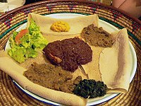
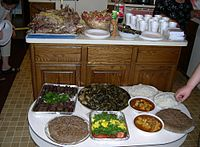
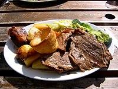

Cooking or cookery is the art, technology, science and craft of preparing food for consumption with or without the use of fire or heat.Cooking techniques and ingredients vary widely across the world, from grilling food over an open fire to using electric stoves, to baking in various types of ovens, reflecting unique environmental, economic, and cultural traditions and trends. The ways or types of cooking also depend on the skill and type of training an individual cook has. Cooking is done both by people in their own dwellings and by professional cooks and chefs in restaurants and other food establishments.
Now cooking and cuisine are more or less the same thing.A cuisine is a style of cooking characterized by distinctive ingredients, techniques and dishes, and usually associated with a specific culture or geographic region. A cuisine is primarily influenced by the ingredients that are available locally or through trade.
There are different kinds of cuisine-
African cuisines use a combination of locally available fruits, cereal grains and vegetables, as well as milk and meat products. In some parts of the continent, the traditional diet features a preponderance of milk, curd and whey products.
Asian cuisines are many and varied. Ingredients common to many cultures in the east and Southeast regions of the continent include rice, ginger, garlic, sesame seeds, chilies, dried onions, soy, and tofu. Stir frying, steaming, and deep frying are common cooking methods. While rice is common to most Asian cuisines, different varieties are popular in the various regions
European cuisine (alternatively, "Western cuisine") include the cuisines of Europe and other Western countries. European cuisine includes that of Europe and to some extent Russia, as well as non-indigenous cuisines of North America, Australasia, Oceania, and Latin America
Oceanian cuisines include Australian cuisine, New Zealand cuisine, Tasmanian cuisine, and the cuisines from many other islands or island groups throughout Oceania
The cuisines of the Americas are found across North and South America, and are based on the cuisines of the countries from which the immigrant people came, primarily Europe. However, the traditional European cuisine has been adapted by the addition of many local and native ingredients, and many techniques have been added to traditional foods as well.
Was this site helpful?
If so please click on the yes button. Otherwise click on the no button